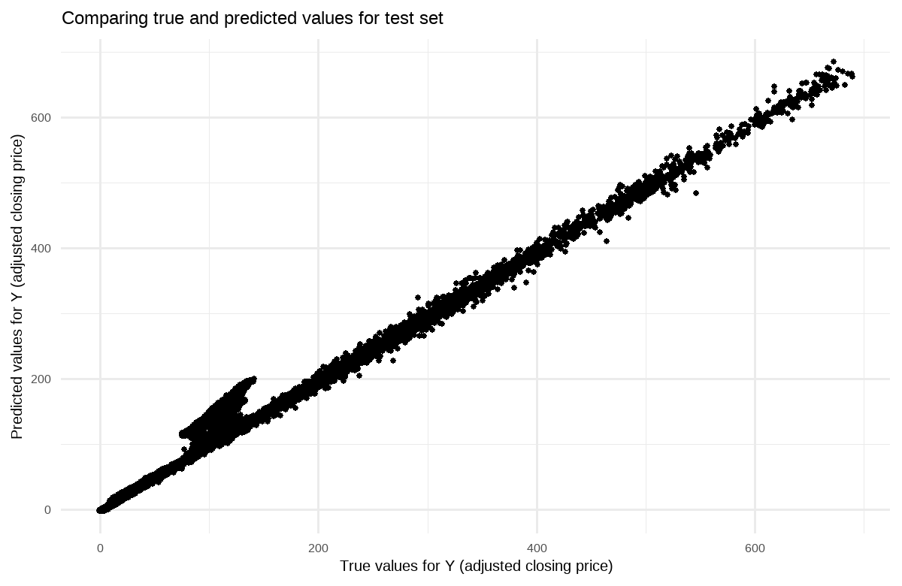
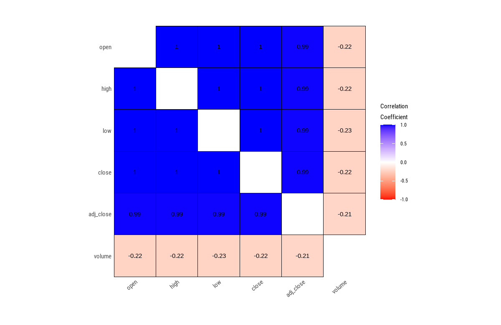

# Required packagesif (!require(pacman))install.packages("pacman")pacman::p_load(tidymodels, tidyverse, ranger, dlookr, randomForest, formattable, glmnet, gridExtra)# Global ggplot theme# setting theme for ggplot2ggplot2::theme_set(ggplot2::theme_minimal(base_size =15, base_family ="sans"))# setting width of code outputoptions(width =65)# setting figure parameters for knitrknitr::opts_chunk$set(fig.width =8, # 8" widthfig.asp =0.65, # the golden ratiofig.retina =1, # dpi multiplier for displaying HTML output on retinafig.align ="center", # center align figuresdpi =150, # higher dpi, sharper imagemessage =FALSE)
Tidy Tuesday Dataset
I have selected the data Big Stock Prices from TidyTuesday which was sourced from Yahoo Finance via Kaggle. This dataset consists of the daily stock prices and volume of 14 different tech companies, including Apple (AAPL), Amazon (AMZN), Alphabet (GOOGL), and Meta Platforms (META) and more. I will be looking for answers or some patterns by considering the below question.
How do daily opening prices, trading volumes, and historical trends influence the adjusted closing prices of stocks?
big_stocks <- readr::read_csv('https://raw.githubusercontent.com/rfordatascience/tidytuesday/master/data/2023/2023-02-07/big_tech_stock_prices.csv')# converting the data to tibblebig_stocks <-as_tibble(big_stocks)big_stocks |>diagnose() |>formattable()
variables
types
missing_count
missing_percent
unique_count
unique_rate
stock_symbol
character
0
0
14
0.0003105039
date
Date
0
0
3287
0.0729018808
open
numeric
0
0
29798
0.6608853797
high
numeric
0
0
30056
0.6666075231
low
numeric
0
0
30028
0.6659865153
close
numeric
0
0
30965
0.6867680979
adj_close
numeric
0
0
41279
0.9155207594
volume
numeric
0
0
43550
0.9658889283
By the above diagnosis, we can interpret that there are no missing values in the data. First we will generate a linear fit to the data by assuming X as open and Y as adj_close.
# Setting parametersseed <-1# seed for random number generation numInstances <-nrow(big_stocks) # number of data instances# Setting seedset.seed(seed)X <- big_stocks$open# adding noise to the dataY_true <- big_stocks$adj_closeY <- Y_true +matrix(rnorm(numInstances), ncol =1)
Added noise to the variable above using a normal distribution.
# Plotting Linear Fit ggplot(big_stocks, aes(X, Y)) +geom_point(color ="black") +geom_smooth(method ="lm",color ="red",linewidth =1) +labs(title ="Stock Price relationship between open and adjusted closing price",x ="Open Price",y ="Adjusted Closing Price" )
Interpretation:It can be interpreted that in most cases when ever there is raise in open price, adj_close is also experiencing a raise in it’s price. Which can be determined as a linear relationship between open and adj_close based on the above plot.
Multiple Linear Regression
Given the input dataset, the following steps are performed:
Split Input Data into Training and Test Sets
Fit Regression Model to Training Set
Apply Model to the Test Set
Evaluate Model Performance on Test Set
Post-processing: Visualizing the model fit
Step 1: Split Input Data into Training and Test Sets
We have a total of 45088, so we will be using around 25000 records as training data and the rest as resting data.
set.seed(123) # For reproducibility# defining train and test datanumTrain <-10000numTest <- numInstances - numTrainstocks_data <-tibble(X = X, Y = Y)split_stocks <-initial_split(stocks_data, prop = numTrain / numInstances)# separating train and test datatrain_stocks <-training(split_stocks)test_stocks <-testing(split_stocks)
We will be creating training set X_train and Y_train and testing set X_test and Y_test.
Using linear_reg() to create a linear regression model by setting lm.
# creating a linear regression model specificationlin_reg_spec <-linear_reg() |>set_engine("lm")# fitting the model to the training datalin_reg_fit <- lin_reg_spec |>fit(Y ~ X, data = train_stocks)
Fitting the data where our data is train_stocks, Y is adj_close and X is open.
Step 3: Apply Model to the Test Set
Predicting the test data outcome using the linear regression fit in above section.
# applying model to the test setY_pred_test <-predict(lin_reg_fit, new_data = test_stocks) |>pull(.pred)
Step 4: Evaluate Model Performance on Test Set
Plotting the data to compare true and predicted values of test dataset.
# Plotting true vs predicted values using ggplotggplot() +geom_point(aes(x =as.vector(Y_test), y = Y_pred_test), color ='black') +labs(title ="Comparing true and predicted values for test set",x ="True values for Y (adjusted closing price)",y ="Predicted values for Y (adjusted closing price)" )

Interpretation: From the above scatter plot of Y_test which is true value of adjusted closing price and Y_pred_test which is the predicted value of adjusted closing price. We can observe that the model performed well as it is displaying a linear relationship between those two, which can be interpreted as the predicted value is closer to the true value.
# preparing data for yardstick evaluationeval_data <-tibble(truth =as.vector(Y_test),estimate = Y_pred_test)# Model evaluationrmse_value <-rmse(data = eval_data,truth = truth,estimate = estimate)r2_value <-rsq(eval_data, truth = truth, estimate = estimate)cat("Root mean squared error =",sprintf("%.4f", rmse_value$.estimate),"\n")
Interpretation: We can observe from the output that the root mean squared error (RMSE) of 10.6773, from which we can understand that, on average the model’s predictions show a deviation of 10.6773 from true values.
And the R-squared value of 0.9885 signifies that the model captures approximately 98.85% of the variability in the response variable, reflecting good predictive accuracy.
Step 5: Post-processing: Visualizing the model fit
Interpretation: The slope of 0.9888 signifies the rate of change in the variable which we are predicting (adj_close) per increase in the variable which we are using for the prediction as a feature(open). The intercept of -3.0146 is the estimated value of the adj_close when the open is zero. Together, these coefficients define the linear relationship of the model.
# plotting outputsggplot() +geom_point(aes(x =as.vector(X_test), y =as.vector(Y_test)), color ='black') +geom_line(aes(x =as.vector(X_test), y = Y_pred_test),color ='blue',linewidth =1) +labs(title =sprintf('Predicted Function: y = %.2fX + %.2f', slope, intercept),x ="X (opening price)",y ="Y (adjusted closing price)" )
Interpretation: In this plot, data points are actual data points and blue line are predicted values. The line is used to represent the relationship between the opening and adjusted closing prices. We can understand that the relationship as a strong positive correlation between the opening(open) and adjusted closing(adj_close) prices.
Effect of Correlated Attributes
In this section, I will be introducing other attributes which might effect the adj_close price and use attributes that are strongly correlated with the previous variable X created. The association between X and Y remains consistent. Subsequently, we proceed to model Y in relation to the predictor variables and assess the training and test set errors for comparison.
Getting correlation matrix to understand the correlation among the features.
big_stocks |>plot_correlate()

From the above above correlation matrix we can determine that high, low, close, open, adj_close are highly positively correlated. And volume seems to be not strongly correlated.
set.seed(1)X2 <- big_stocks$highX3 <- big_stocks$lowX4 <- big_stocks$closeX5 <- big_stocks$volumeplot1 <-ggplot() +geom_point(aes(X, X2), color ='black') +xlab('Opening Price (X)') +ylab('Highest Price (X2)') +ggtitle(sprintf("Correlation between open and high = %.4f", cor(X[-c((numInstances - numTest +1):numInstances)], X2[-c((numInstances - numTest +1):numInstances)])))plot2 <-ggplot() +geom_point(aes(X2, X3), color ='black') +xlab('Highest Price (X2)') +ylab('Lowest Price (X3)') +ggtitle(sprintf("Correlation between high and low = %.4f", cor(X2[-c((numInstances - numTest +1):numInstances)], X3[-c((numInstances - numTest +1):numInstances)])))plot3 <-ggplot() +geom_point(aes(X3, X4), color ='black') +xlab('Lowest Price (X3)') +ylab('CLosest Price (X4)') +ggtitle(sprintf("Correlation between low and close = %.4f", cor(X3[-c((numInstances - numTest +1):numInstances)], X4[-c((numInstances - numTest +1):numInstances)])))plot4 <-ggplot() +geom_point(aes(X4, X5), color='black') +xlab('Closing price (X4)') +ylab('Volume (X5)') +ggtitle(sprintf("Correlation between close and volume = %.4f", cor(X4[-c((numInstances-numTest+1):numInstances)], X5[-c((numInstances-numTest+1):numInstances)])))# combining plots into a 2x2 gridgrid.arrange(plot1, plot2, plot3, plot4, ncol=2)
We can observe the same as the correlation matrix which is:
We will be involving open, high, close and low as these are strongly correlated, even though volume is weakly correlated will be using it for predictions.
For post-processing, we compute both the training and test errors of the models. We can also show the resulting model and the sum of the absolute weights of the regression coefficients, i.e., \(\sum_{j=0}^d |w_j|\), where \(d\) is the number of predictor attributes.